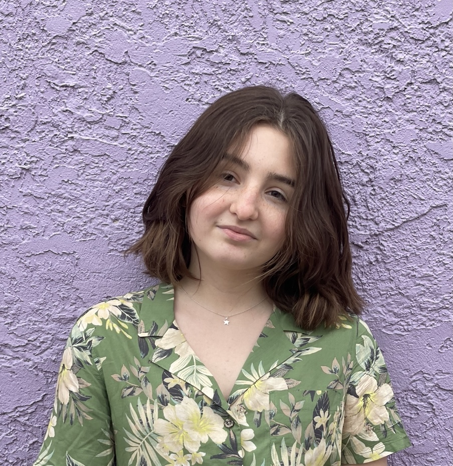

Mya Zepp

Email:mzepp@terpmail.umd.edu
Twitter
GitHub
I am a journalism and government and politics double major at the University of Maryland.
I will graduate in December of 2022 after which I plan to pursue a career in political journalism.
Experience
Student employee, BIG TEN NETWORK
September 2019 – April 2021
- Facilitated the recordings of live sporting events
- Gained knowledge in the operation of professional camera equipment
Writer, GREENBELT NEWS REVIEW
October 2020 – May 2021
- Wrote and had published a series of articles for this news publication
- Wrote any story that staff writers were unable to cover
Student Writer, THE CAMPUS TRAINER
August 2020 – April 2021
- As a student writer at the Campus Trainer I wrote and published articles focusing primarily on nutrition, fitness, fashion, beauty and general wellbeing
- Cooperated with editors to produce quality work
Intern, NEWS BREAK
April 2021 – June 2021
- Completed 9 to 10 articles a week
- Collaborated with other reporters determine relevancy of news
Education
- Southview High School, 2019
- University of Maryland, Philip Merrill College of Journalism, 2022
Skills
- Minitab
- Microsoft Office
- AP Style
- R studio